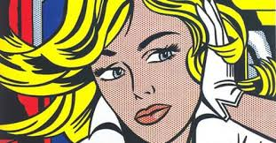
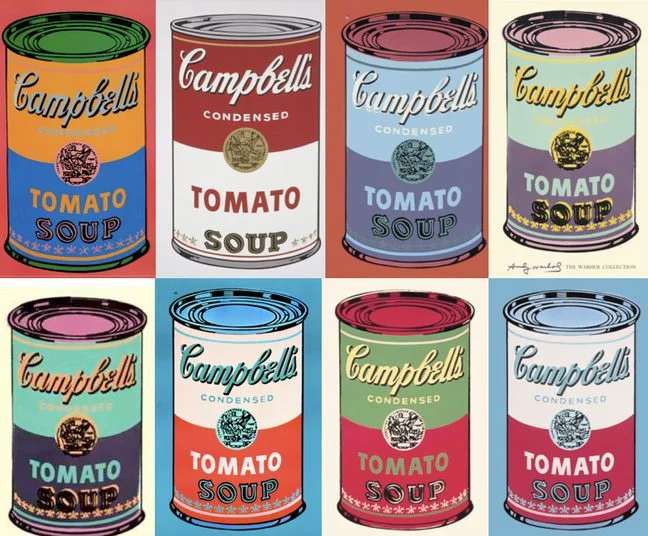
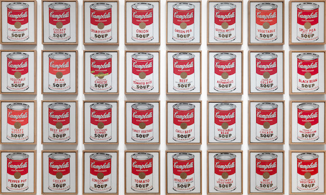
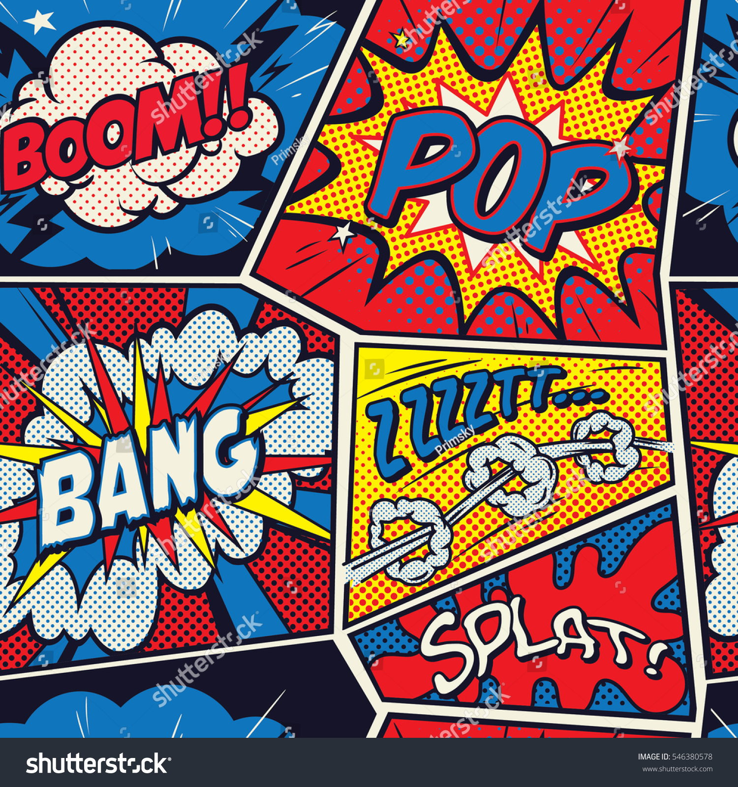
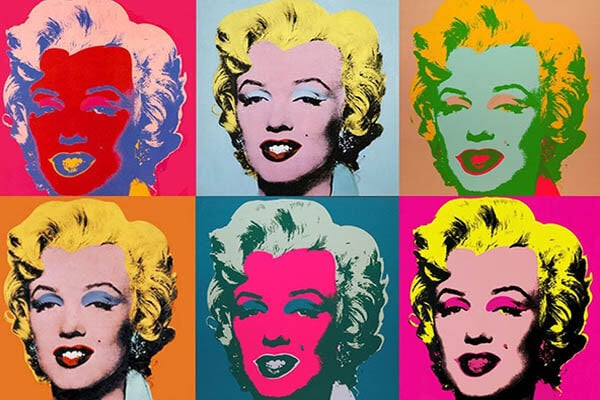
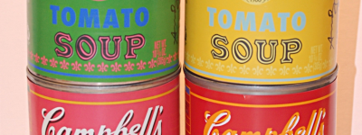
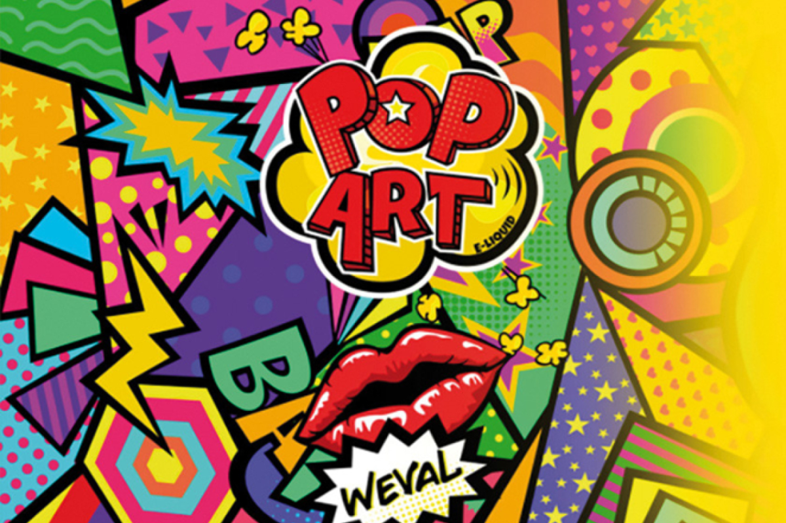

El Pop Art fue un movimiento artístico surgido en Gran Bretaña y Estados Unidos durante las décadas de 1950 y 1960.
Incorporó imágenes de la cultura de masas, la publicidad, los cómics y los productos comerciales para transformarlos en arte.
Utilizó colores intensos, repetición y recursos gráficos inspirados en los medios de comunicación.
Su influencia continúa presente en el diseño gráfico, la moda y la publicidad contemporánea.

La palabra “Pop” proviene de “popular” y hace referencia a la cultura cotidiana y los medios masivos.
El término se utilizó para describir obras inspiradas en imágenes accesibles y comerciales.


Anuncios y carteles fueron inspiración visual directa.

Viñetas y líneas negras marcaron su estética.

Figuras famosas se transformaron en íconos visuales.

Objetos cotidianos ocuparon el centro de la obra.
Representa la sociedad de consumo y el mercado.

Los medios populares forman parte de su lenguaje visual.